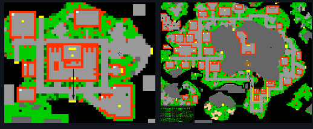
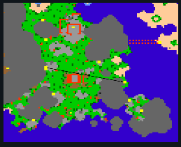

Po zapolowaniu na potwory i zebraniu przedmiotów, możesz sprzedać swoje łupy handlarzom NPC rozsianym po mapie.


System automatycznie obsługuje przedmioty możliwe do ułożenia w stosy, co ułatwia zarządzanie ekwipunkiem podczas handlu.
Ważne Uwagi:
- Niektórzy NPC kupują tylko określone rodzaje łupów (np. ekwipunek, surowce lub przedmioty magiczne).